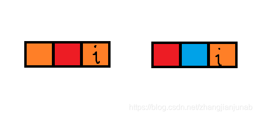

CF Round 681 Div.2 赛后总结
前言
比赛链接：https://codeforces.com/contest/1443
ZWQking AK啦！！！！！！！Orz
A
题意：有 $n$ 个小孩，有 $4n$ 个位置，要求你安排小孩坐位置，使得被坐的位置的编号 $a,b$ 满足：$gcd(a,b)≠1,a,b$。
做法：构造法，让他们坐 $2n+2,2n+4,2n+6,…,4n$ 的位置即可。
1 |
|
B
题意：给你一个字符串，$1$的位置有地雷，$0$没有，你可以花$a$代价引爆连续一段的雷，或者花$b$代价埋一颗雷。
做法：
- DP做法，$dp[i][0/1]$ 分别表示这个位置没有地雷和有地雷的转移。
- 赛后想了想，可以贪心，计算中间的每一段连续的 $0$ 填满的代价，如果小于 $a$ 则填满，否则不填满，直接两端引爆。
我才用的是 $DP$ 做法。
两种做法时间复杂度都是：$O(n)$
1 |
|
C
题意： 给你 $a$ 数组和 $b$ 数组，对于每个 $i$ ，要么让小明多花 $b_{i}$ 的时间，要么直接多出一个人花 $a_{i}$ 的时间。
然后问你如何安排才可以让花费时间最大的人最小。
做法：二分答案，还算简单。
1 |
|
D
题意： 给你一个 $a$ 数组，你有两种操作：
- 选择一个 $i$，让 $1\sim i$ 的位置全部减一。
- 选择一个 $i$，让 $i\sim n$ 的位置全部减一。
问是否可以把 $a$ 数组全部变成 $0$ 。
做法：他们都说很简单，就我想了挺久的。
我们不妨处理 $1$ 操作，设 $b$ 数组，$b_{i}$ 表示第 $i$ 个位置经过 $1$ 操作减去了 $b_{i}$ 。
$b_{i}≥b_{i+1}$。
这样，只需要构造一个合法的 $b$ 数组使得 $a$ 数组减完 $b$ 数组后从右往左到最后一个非 $0$ 数字非严格单调递减。
然后就开始考虑差分约束，$b_{i}≥b_{i+1}$，$i+1$ 向 $i$ 连一条 $0$ 的边，因为要 $a_{i}-b_{i}≤a_{i+1}-b_{i+1}$，所以 $a_{i}-a_{i+1}+b_{i+1}≤b_{i}$，$i+1$ 向 $i$ 连接一条边权 $a_{i}-a_{i+1}$ 的边，从 $n$ 点开始跑最长路，然后最后检查 $b_{i}≤a_{i}$ 即可，但是后面发现了一个事情，边只会从 $i+1$ 连向 $i$ ，直接一遍扫过去就行了啊(╯‵□′)╯︵┻━┻。
当然，你可以直接默认 $b_{n}$ 为 $0$ ，因为如果 $b_{n}>0$ ，完全可以把 $1\sim n$ 的 $1$ 操作拆成一个 $1$ 操作一个 $2$ 操作来搞，所以可以直接默认 $b_{n}=0$ 。
时间复杂度：$O(n)$
1 |
|
E
题意：默认现在是字典序最小的全排列（即：$1,2,3,4,…,n$），长度为$n$，然后有两个操作：
- 统计 $[l,r]$ 的区间和。
- 假设现在的全排列字典序排名为 $x$ ，给你一个 $y$ ，让你把全排列变成字典序排名为 $x+y$ 的全排列。
做法： 和康托展开非常有关系，因为全排列排名总和为 $1e12$ ，发现 $16!$ 已经大于这个数字，暴力维护后面 $16$ 个数字，然后暴力统计即可。
时间复杂度：$O(q16^2)$1
2
3
4
5
6
7
8
9
10
11
12
13
14
15
16
17
18
19
20
21
22
23
24
25
26
27
28
29
30
31
32
33
34
35
36
37
38
39
40
41
42
43
44
45
46
47
48
49
50
51
52
53
54
55
56
57
58
59
60
61
62
63
64
65
66
67
68
using namespace std;
typedef long long LL;
int a[N],b[20],n,q;
LL fc[20];
bool v[N];
void kangtuo(int l,LL k)
{
int top=0;
for(int i=l;i<=n;i++)b[++top]=i,v[top]=0;
sort(b+1,b+top+1);
for(int i=top;i>=2;i--)
{
LL shit=k/fc[i-1];k%=fc[i-1];
for(int j=1;j<=top;j++)
{
if(!shit && !v[j])
{
a[top-i+l]=b[j];
v[j]=1;
break;
}
if(!v[j])shit--;
}
}
for(int i=1;i<=top;i++)if(!v[i])a[n]=b[i];
}
LL nowcnt=0;
inline LL getsum(int l,int r){return (LL)(l+r)*(r-l+1)/2;}
int main()
{
scanf("%d%d",&n,&q);
fc[0]=1;for(int i=1;i<=16;i++)fc[i]=fc[i-1]*(LL)i;
for(int i=1;i<=n;i++)a[i]=i;
int ll=n-16+1;
if(ll<=0)ll=1;
for(int i=1;i<=q;i++)
{
int type;scanf("%d",&type);
if(type==1)
{
int l,r;scanf("%d%d",&l,&r);
if(r<ll)printf("%lld\n",getsum(l,r));
else
{
LL sum=0;
int lll=ll;
if(l>=ll)lll=l;
else sum=getsum(l,ll-1);
for(int i=lll;i<=r;i++)sum+=a[i];
printf("%lld\n",sum);
}
}
else
{
int x;scanf("%d",&x);
nowcnt+=x;
kangtuo(ll,nowcnt);
}
}
return 0;
}
F
题意：给你一个 $a$ 数组，长度为 $n$ ，可以操作 $k$ 次，第 $t$ 次操作，你可以删掉第 $i(1≤t≤n-t+1)$ 个数字，然后把 $a_{i+1}$ 或者 $a_{i-1}$（必须满足被贴的数字有意义，即在数组范围内，且必须贴数字）贴到 $b$ 数组最右边（ $b$ 数组一开始为空），然后把 $a_{i}\sim a_{n}$ 全部往左移一位，现在给你 $a,b$ 数组（ $a,b$ 数组的数字都是不同的），问你操作序列能有多少个。
做法： 首先化一下题意：$b$ 数组在 $a$ 数组中对应的位置被锁上了，也就是不能被删除，然后对于 $b_{1}$ ，其在 $a$ 数组对应的位置为 $a_{i}$ ，如果 $i+1,i-1$ 的位置都被锁上了，这个 $b$ 数组绝对得不到，否则，假设 $i-1$ 解锁了，相当于牺牲掉 $i-1$ 的位置给 $i$ 位置解锁。
在上述过程中，不难发现，如果对于一个上锁的位置 $i$ ，左边如果没有被锁，或者解锁的时间早于它，那么在解锁 $i$ 时，左边一定是未锁上的位置（因为如果左边牺牲自己去解锁更左边的位置，那么更左边就变成了未锁上的左边），右边同理。

橙色为锁上的位置，红色为未锁上的位置，蓝色代表牺牲。
这样，就只需要在开始的时候判断每个位置是否可以牺牲左边或者右边即可。
时间复杂度：$O(n)$
1 |
|